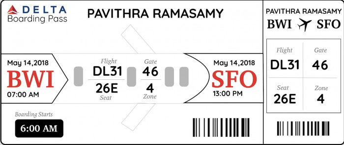
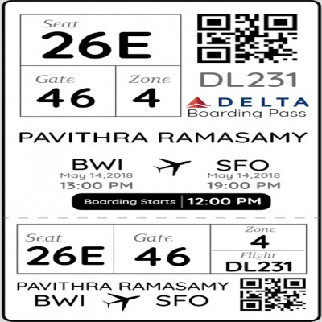

Boarding Pass Redesign
- Duration: Spring 2018 - Individual Project
- Course: HCI Design Methods
- Tools and Methods: Brainstorming, Pen and Paper sketching, User Interviews and Adobe Illustrator
For this project, I started by doing a quick research on who the users and defined their main goal. I conducted several informal user interviews and tried to understand their pain points and their needs. With the information that I received from the users, I observed that the current boarding pass designs does not aid the users in the aspects of memory and cognition. They either had too much of information to process or they made the user to think and recall a lot of things as opposed to Nielsen's famous heuristic - Recognition rather than Recall.
DISCLAIMER - I am in no way related to Delta Airlines and its affiliates. I have chosen it just for a proof of concept for this project.
Process
Discover
Target Audience or Users
The target audience for this data visualization project are data analysts, airport and airlines crew, and flyers(passengers).
On a short research on the target audience, I found that there are 2 main group of users - the passengers and the flight attendents. For this project, I am focusing on the passengers perspective alone.
User Goals
To correctly identify required information on-the-go and help remember it throughout rather than wanting to look at the boarding pass again and again.
To find out more about the needs and the pain points of the users, I conducted informal user interviews with my friends.
Define - Current Issues:
The observations I made from the interviews are as follows -
- It is difficult to retrieve information on-the-go from the boarding passes as they are cramped with a lot of information.
- For frequent travellers, it is difficult to keep track of the airports they are travelling to and the connections they will be making during their journey.
Design Ideas
I came up with the following design ideas that would aid the user in terms of memory and cognition and also help them in retaining information.
Final Design
Based on the inputs I received from the users on my sketches, I redesigned the boarding passes based on concepts of memory, cognition and gestalt laws.
This design was developed in adherence to Sketch #8. The most important information for a user on the go is their departing city to destination city information along with the date and time of travel. To indicate this information and make them stand out, I have highlighted them to improve cognition and memory. Following Miller’s law of remembering only 7 (plus or minus 2) items at a time, the other information such as Flight, Gate, Seat and Zone are displayed in the middle of the boarding pass. To improve aesthetics, this information is provided inside a flight shaped object as this information is only required while boarding on to the flight. The perforated portion of the pass holds the same information in a simple manner for the flight attendants to easily recognize the information following Neilsen’s heuristic of Recognition rather than Recall.
On talks with users and frequent flyers, it was noted that most of them keep their boarding passes on their passports and each time they need to look at the information, they had to take their boarding passes off their passports and view the information. In order to avoid this situation, I have designed a passport sized design that fits well within the passport. When the passenger needs to look at the flight details, they just need to lift the flap of the pass on the top – where they can directly view the square of information on Seat, Gate and Zone instead of taking the whole boarding pass outside of the passport to view the information. As QR codes store more information than barcodes, this design employs the usage of QR codes to store all the passenger details. This design employs law of proximity for the square shaped information and also uses Fitt’s Law – reaching the target is much more quick in this design and it also fits well inside the passport. Miller’s Law and Law of similarity are also followed here for better memory and cognition.
